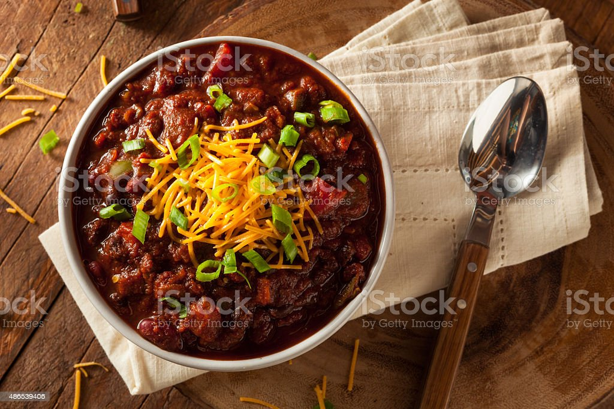

Chili

Chili Recipe
Are you on the hunt to find the best chili recipe on the internet? Well, stop right there, because you just did! If you're looking for hearty, filling chili that's just the right level of spicy, this is the chili recipe for you.
Yes, this recipe does look like you throw everything but the kitchen sink in it, but wow is the long ingredient list worth it. You might as well just make a double batch because you'll be craving more as soon as it's gone.
Ingredients
- 4 tablespoons olive oil
- 1 yellow onion, chopped
- 1 red bell pepper, chopped
- 1 Anaheim chile pepper, chopped
- 2 red jalapeno pepper, chopped
Steps
- Heat oil in a large pot over medium heat; cook and stir onion, bell pepper, Anaheim pepper, jalapeno peppers, and garlic in the hot oil until softened.
- Meanwhile, heat a large skillet over medium-high heat. Cook and stir beef in the hot skillet until browned and crumbly, 5 to 7 minutes; add Worcestershire sauce and garlic powder. Crumble bouillon cubes over beef and add beer. Continue to cook , scraping any browned bits from the bottom of the skillet, until liquid is hot, about 3 minutes. Stir beef mixture into pepper mixture.
- Stir crushed tomatoes, diced tomatoes, tomato paste, and wine to the beef mixture. Season with chili powder, 2 tablespoons cumin, brown sugar, pepper sauce, basil, paprika, salt, oregano, and black pepper. Bring to a boil and reduce heat to medium-low. Cover and simmer until meat and vegetables are very tender and flavors have developed in the chili, about 90 minutes, stirring occasionally.
- Mix kidney beans into beef and vegetables. Continue to simmer until beans are hot, about 30 minutes more.